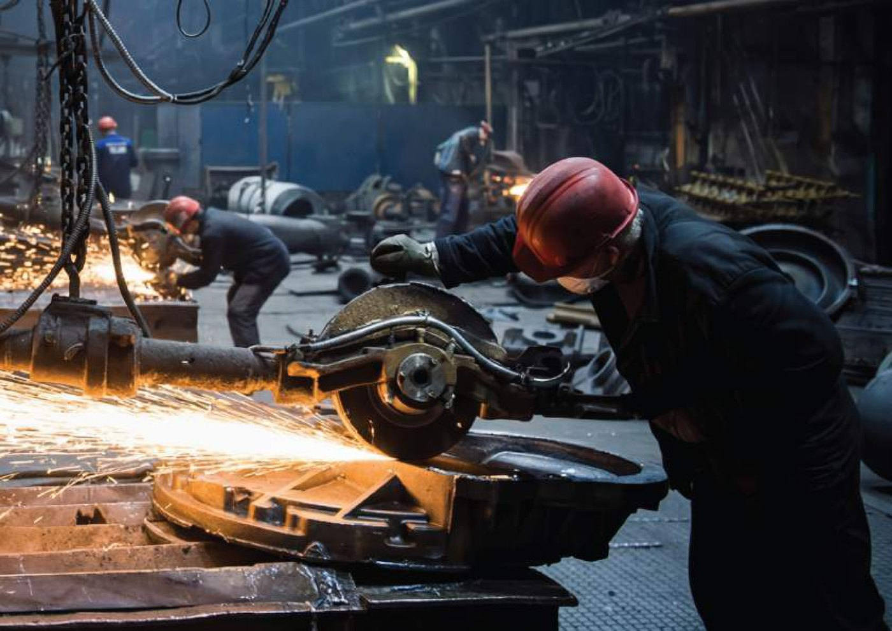

Optimize the steel.
Improve the project.
WELDEX Value Engineering focuses on system logic, connections, coordination and execution efficiency — not cost reduction in isolation.
A smarter path
from design to erection.
Nine connected review points help reduce complexity, improve constructability and support stronger lifecycle value.
System Optimization
Review the structural concept as one system to reach a more efficient distribution of steel and forces.
Span Efficiency
Study key spans and primary members to improve performance while reducing unnecessary complexity.
Secondary Optimization
Right-size secondary members to perform their role without adding unnecessary weight or complication.
Connection Simplification
Develop clearer connection logic that supports fabrication, erection and future maintenance.
Design Coordination
Coordinate steel requirements with other disciplines to reduce clashes and downstream site changes.
Load Review
Review load requirements and align them with the most appropriate structural steel solution.
Lifecycle Value
Consider durability, maintenance and long-term project value rather than initial cost in isolation.
Fabrication Efficiency
Simplify details to reduce waste and support faster, more controlled fabrication.
Erection Efficiency
Develop details that support clearer sequencing and more efficient site installation.
Better value.
Less complexity.
WELDEX Value Engineering links engineering decisions to fabrication and erection reality, helping the steel solution become more practical, coordinated and controllable.
Bring WELDEX
into the project.
Discuss a project where structural steel optimization, constructability or strengthening can add value.
Discuss Your Project →